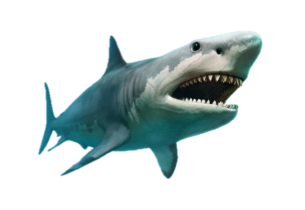

Ocean Guardians
Sharks
As apex predators, sharks sculpt the health of reefs and open oceans alike. Their presence keeps prey populations in balance, preserving seagrass meadows, coral communities, and the food webs that support us all.
Interesting Facts
- Sharks can continuously replace their teeth, shedding thousands over a lifetime without losing their bite.
- The whale shark can reach 12 meters in length, while the dwarf lantern shark fits in the palm of your hand.
- By regulating prey, sharks indirectly protect habitats such as seagrass meadows that store massive amounts of blue carbon.
